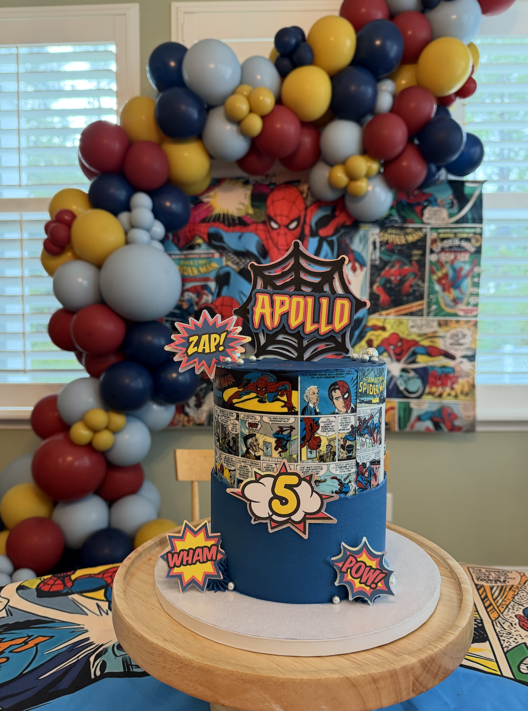

Apollo's Spider-Man Birthday Party
For Apollo’s 5th birthday, I wanted to create a **Spider-Man-themed party** that reflected his love for the superhero and the **boho Spider-Man room** he enjoys every day. We recently redesigned his room with a custom mural, so it felt natural to carry that theme into his celebration.

Bringing His Room to Life in a Party
I carefully crafted a **custom color palette** that would match the aesthetic of his bedroom and sent it to the cake designer. The final result was absolutely stunning—it perfectly captured the look I had envisioned.
The Perfect Spider-Man Cake
The cake was a **show-stopping piece**, combining the classic comic book aesthetic with a modern boho touch. The details were impeccable, making it a centerpiece for the party.
Decor & Balloon Installations
I designed and installed **all of the balloons and decorations**, creating a space that felt immersive and fun. From the web-like balloon clusters to the custom Spider-Man graphics, every detail tied into the theme beautifully.

A Birthday to Remember
Even though it was **pouring rain** on Apollo's birthday, he still had an **amazing time** jumping in the Spider-Man **bounce house** and celebrating with his friends. Seeing his excitement made all the effort worth it!
This birthday was such a joy to put together, and I loved seeing how much Apollo appreciated every detail. Designing spaces and moments that reflect the people I love is one of my favorite things to do. üíô‚ù§Ô∏è